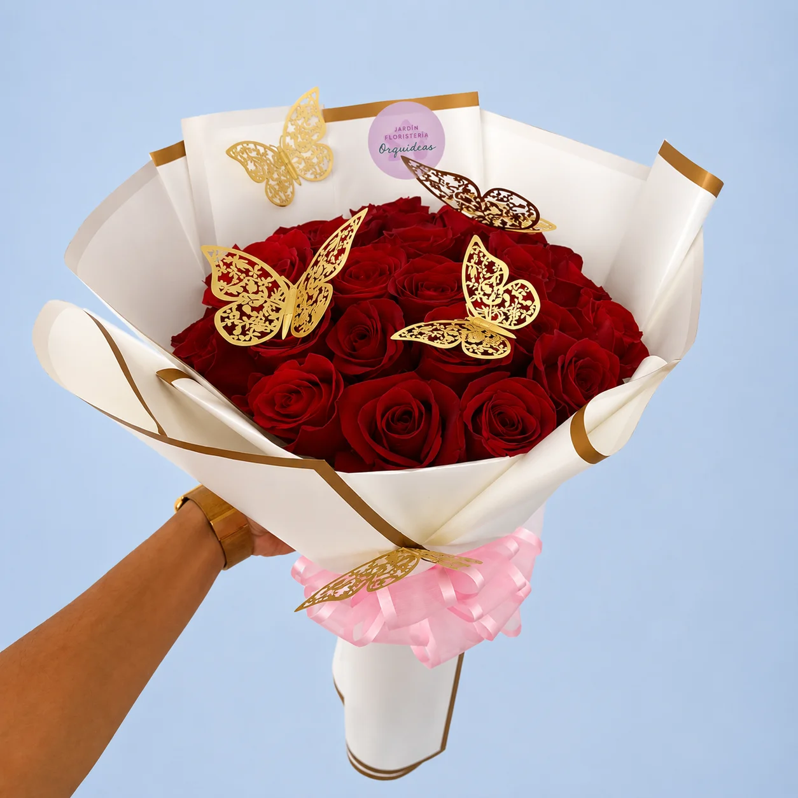
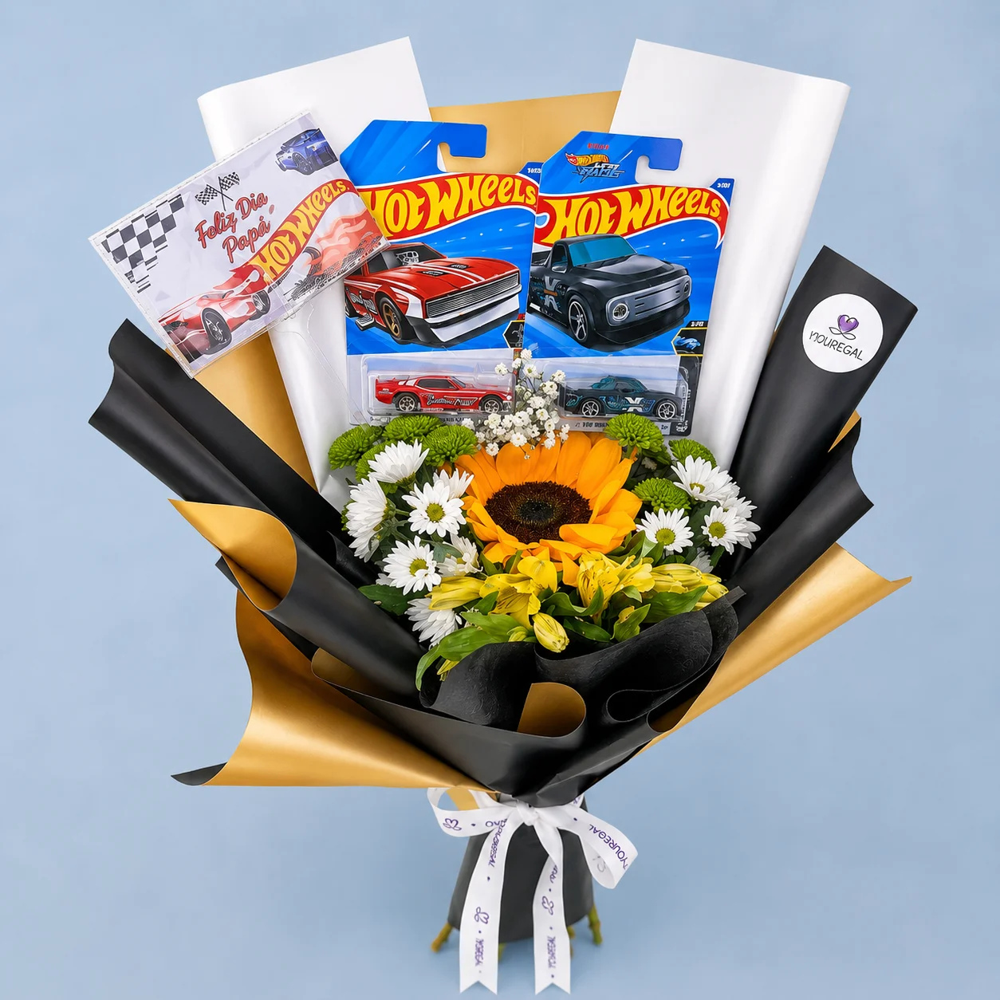

Canastas temáticas creadas para sorprender en cada ocasión especial con presentaciones realmente inolvidables
Nuestros desayunos sorpresa son canastas temáticas preparadas con dedicación para comenzar la jornada con cariño, alegría y los sabores más reconfortantes, ideales para aniversarios en la mañana, cumpleaños especiales, Día de la Madre, San Valentín o simplemente para expresarle a alguien lo mucho que te importa desde temprano. Cada canasta trae un arreglo floral fresco con flores de temporada en tonos vivos y alegres que despiertan los sentidos, panes artesanales recién horneados que inundan el lugar con aromas irresistibles, café gourmet de origen colombiano escogido especialmente para cada ocasión, y detalles matutinos como croissants, muffins, galletas artesanales y mermeladas premium. La presentación es impecable en canastas de mimbre natural o recipientes elegantes reutilizables, adornadas con cintas temáticas y tarjetas personalizadas. Contamos con distintas versiones, desde desayunos íntimos para parejas hasta desayunos familiares abundantes, alternativas veganas y sin gluten, e incluso opciones corporativas para sorprender a equipos de trabajo o clientes especiales. Cada desayuno sorpresa se entrega en un horario matutino acordado con antelación, asegurando la frescura de todos los componentes y la mayor satisfacción del destinatario desde el inicio del día.

Nuestras canastas de frutas y flores son la combinación perfecta entre bienestar, belleza natural y buen gusto, ideales para quienes aprecian una alimentación sana y una estética cuidada reunidas en un solo regalo inolvidable. Cada canasta es una obra de arte comestible que une frutas frescas de temporada elegidas con esmero por su calidad, sabor y aspecto, con arreglos florales que realzan los colores naturales de las frutas y forman una armonía visual extraordinaria. Sumamos frutas exóticas como pitahayas, maracuyás, uchuvas y mangos, junto a frutas tradicionales como manzanas, peras, uvas y fresas, todas acomodadas de manera artística entre flores frescas como girasoles, rosas, alstroemerias y follaje decorativo. La presentación se hace en canastas tejidas a mano, cajas de madera rústica o recipientes modernos según el estilo que prefieras, con papel de seda natural y cintas orgánicas. Son perfectas como regalos corporativos que reflejan interés por el bienestar de empleados y clientes, obsequios para quienes se recuperan de salud, felicitaciones por logros deportivos o académicos, y gestos de afecto hacia personas que cuidan lo que comen. Cada canasta trae información nutricional de las frutas que incluye y recomendaciones de conservación para aprovechar al máximo la experiencia del regalo.
Nuestras canastas para bebés son regalos florales exclusivos pensados especialmente para festejar la llegada de una nueva vida y acompañar a las familias en uno de los instantes más emotivos que existen. Cada canasta reúne la delicadeza y pureza de las flores con artículos prácticos y bonitos para recién nacidos, dando como resultado un regalo que es a la vez útil y simbólico. Los arreglos florales emplean flores suaves en tonos pastel como rosas blancas y rosadas, lirios blancos, baby breath y flores de temporada en colores tiernos que evocan inocencia y pureza. Entre los artículos para bebé se encuentran ropita de algodón orgánico en tallas newborn y 0-3 meses, baberos bordados, mantas suaves hipoalergénicas, productos de aseo especiales para piel sensible, juguetes de estimulación temprana certificados, chupetes de silicona libre de BPA y pequeños peluches en materiales seguros. Adaptamos cada canasta al género del bebé o a colores neutros cuando se trata de una sorpresa, agregamos tarjetas de felicitación especiales para los padres y ofrecemos la posibilidad de bordar el nombre del bebé en algunos artículos. Las canastas se presentan en recipientes reutilizables que después sirven para organizar las cosas del bebé, decoradas con cintas de raso y papel tissue en colores coordinados que logran una presentación memorable y muy fotografiable para este momento tan especial.

Nuestras canastas gourmet son la máxima expresión de la sofisticación en regalos florales, uniendo flores premium con una cuidada selección de productos delicatessen que conquistan a los paladares más exigentes. Cada canasta es una experiencia gastronómica integral que incluye arreglos florales elegantes con orquídeas, rosas de jardín, peonías o flores exóticas según la época, acompañados de productos gourmet importados y nacionales de la más alta calidad. La oferta gastronómica abarca quesos artesanales madurados, embutidos premium, aceites de oliva extra virgen, vinagres balsámicos añejados, chocolates belgas o suizos, vinos selectos de bodegas reconocidas, champagne para ocasiones especiales, pâtés y terrinas francesas, mermeladas artesanales de frutas exóticas, frutos secos premium, y crackers y panes gourmet. Cada componente lo escogen expertos en gastronomía y se marida con cuidado para lograr una experiencia sensorial completa. Son ideales para regalos corporativos de alto nivel, aniversarios especiales, cenas románticas, agradecimientos a clientes VIP, celebraciones ejecutivas o cualquier ocasión que exija un obsequio de gran distinción. La presentación se realiza en cajas de madera noble, cestas de mimbre premium o recipientes de lujo que quedan como piezas decorativas permanentes, con tarjetas que detallan el origen y las características especiales de cada producto incluido.
Áreas de Entrega en Cartagena
Bocagrande
Canastas premium y desayunos sorpresa
Getsemaní
Canastas gourmet y frutas exclusivas
Manga
Canastas para bebés y celebraciones
Crespo
Desayunos matutinos coordinados
Ternera 2000
Canastas temáticas personalizadas
Castillogrande
Canastas VIP y presentaciones elegantes
Marbella
Canastas familiares y corporativas
La Castellana
Canastas premium residenciales
El Centro
Desayunos sorpresa exclusivos
Turbaco Centro
Canastas saludables y gourmet
Santa Rosa Centro
Canastas de lujo zona colonial
Turbaco
Canastas coordinadas con portería
Zaragocilla
Canastas por sectores residenciales
Pie de la Popa
Canastas centro histórico
El Cabrero
Canastas express zona comercial
La Boquilla
Canastas naturales y orgánicas
Blas de Lezo
Canastas exclusivas para residenciales
El Bosque
Canastas temáticas completas
Los Ejecutivos
Canastas coordinadas portales
Visítanos